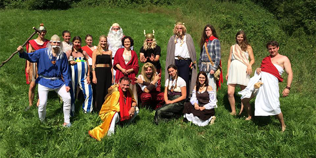
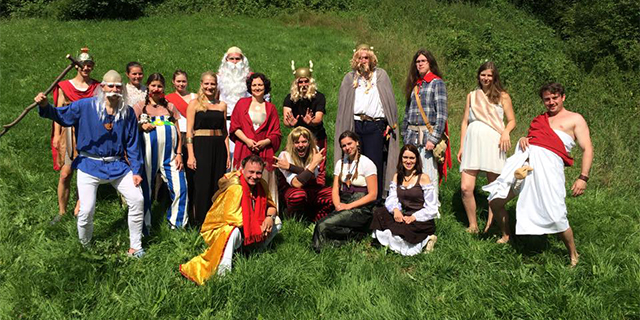

LDT 1B 2015 A&B úspěšně zakončen!
Tábor se myslíme velice podařil po všech stránkách. Počasí přálo, pěkně se hrálo, vše plynulo bez větších problémů. Těšíme se na další dobrodružství a tábor!
Váš displej či okno prohlížeče je příliš malé pro zobrazení této stránky. Zkuste zapnout zobrazení webu pro PC.


Tábor se myslíme velice podařil po všech stránkách. Počasí přálo, pěkně se hrálo, vše plynulo bez větších problémů. Těšíme se na další dobrodružství a tábor!
V rychlém sledu přinášíme III. díl A&B Menhiru, který popisuje táborové dění do neděle. Tentokrát i hojněji přispěly samotné dětské vesničky. Užijte si čtení.
Menhir 3 (doplnit)
Druhý díl občasníku Menhir je již nějakou dobu na světě a tak ho dáváme k dispozici i do prostoru kybernetického. Za chvíli rovnou přijde na řadu i třetí díl :))
Menhir 2 (doplnit)
Jako již tradičně se budeme pokoušet o nepravidelné vydání novin táborového dění 1.běhu LDT Kolt 2015. Nyní s názvem MENHIR!
Menhir 1 (doplnit)
Římští kolonizátoři v čele s Juliem Caesarem ovládli celou Gálii kromě jedné malé osady. Obyvatelé se úspěšně brání a to díky své šikovnosti, chytrosti a schopnosti spolupracovat. Nemalou roli hraje také kouzelný lektvar, díky kterému mají Galové více síly a odvahy. Co se stane, když dojde? Dokážou se Galové bránit Římanům i během jeho složitých příprav? Podaří se jim ho vyrobit?